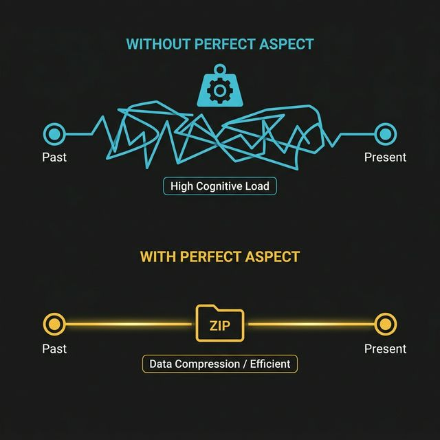

PROBLEM (OLMASAYDI?)
"I lost my keys yesterday, and I still don't have them now, so I need help."
Perfect Aspect icat edilmeseydi, o "İZ" durumunu aktarmak için sürekli ek cümleler kurmak gerekirdi. İletişim hızı düşer ve beynin işlem yükü (cognitive load) artardı.
ÇÖZÜM (İLETİŞİM EKONOMİSİ)
"I HAVE lost my keys."
Dil, bu karmaşayı tek bir "have + V3" formülüne sıkıştırır. Dinleyici, olayın tarihçesini değil, şu anki sonucunu umursaması gerektiğini anında kavrar.
İki mesaj (Geçmiş eylem + Şu anki aciliyet) tek bir gramere sıkıştırılmıştır.
